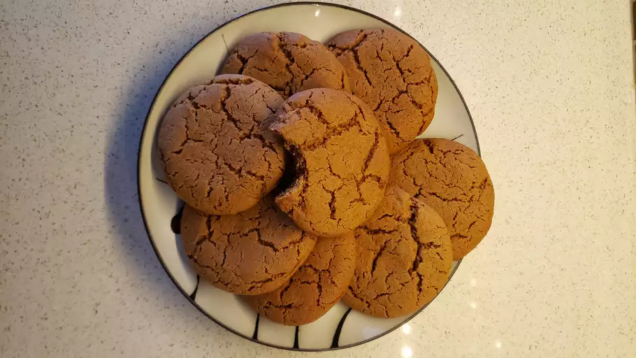

Big Soft Ginger Cookies

Photo by Zukigirl
Big Soft Ginger Cookies are generously-sized, chewy delights with a
perfect blend of warm spices.
Their tender interior and slightly crisp exterior offer a comforting
texture, while the dominant notes of ginger, molasses, and spices create a
harmonious and nostalgic flavor profile. Perfect for cozy evenings or
festive occasions, these cookies boast a delightful homemade charm.
Ingredients
- 2 1/4 cups all-purpose flour
- 2 teaspoons ground ginger
- 1 teaspoon baking soda
- 3/4 teaspoon ground cinnamon
- 1/2 teaspoon ground cloves
- 1/4 teaspoon salt
- 3/4 cup unsalted butter, softened
- 1 cup brown sugar, packed
- 1 large egg
- 1/4 cup molasses
Instructions
-
Preheat Oven: Preheat your oven to 350°F (175°C). Line baking sheets
with parchment paper.
-
Whisk Dry Ingredients: In a medium bowl, whisk together the flour,
ground ginger, baking soda, ground cinnamon, ground cloves, and salt.
Set aside.
-
Cream Butter and Sugar: In a large bowl, cream together the softened
butter and brown sugar until light and fluffy.
-
Add Egg and Molasses: Beat in the egg until well combined, and then add
the molasses. Mix until the ingredients are thoroughly incorporated.
-
Incorporate Dry Ingredients: Gradually add the dry ingredient mixture to
the wet ingredients, mixing until a soft dough forms.
-
Optional Sugar Coating: If desired, roll tablespoon-sized portions of
dough into balls and coat them in additional sugar.
-
Place on Baking Sheets: Arrange the cookie dough balls on the prepared
baking sheets, leaving enough space between each cookie.
-
Bake: Bake in the preheated oven for about 10-12 minutes, or until the
edges are set but the centers are still soft.
-
Cool: Allow the cookies to cool on the baking sheets for a few minutes
before transferring them to wire racks to cool completely.